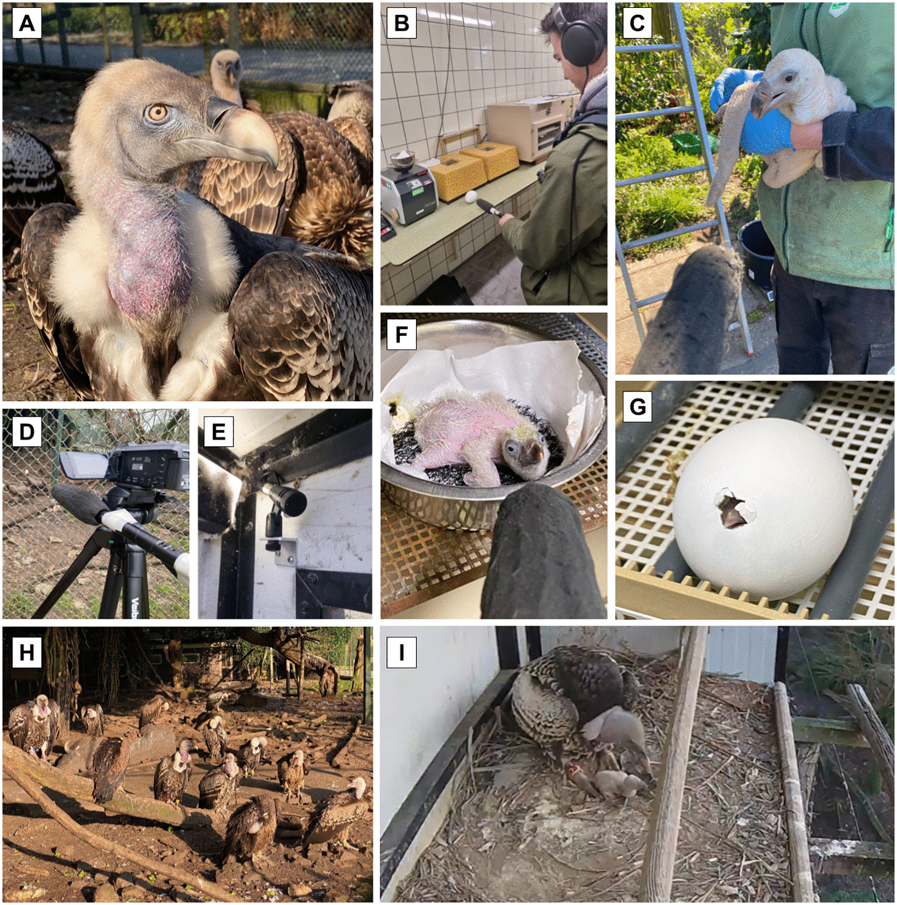

أصوات خافتة من داخل البيضة تكشف بداية عالم صوتي غني لدى نسر روبل… وقد تفتح بابًا جديدًا لحمايته.
من داخل البيضة يأتي الصوت أولًا، ثم يخرج الفرخ إلى العالم. هكذا تبدأ الحكاية لدى نسر روبل، الذي تكشف دراسة جديدة أن عالمه أقل صمتًا وأكثر تنوّعًا مما توحي به صورته الشائعة.
وثّق الباحثون نداءات خافتة تصدرها الصغار قبل الفقس، ضمن دراسة نُشرت في مجلة PLOS One في 21 تشرين الأول 2026. ووفق جامعة أوترخت، تبدأ هذه الأصوات قبل خروج الفرخ بنحو يومين.
تسجيل أصلي لبيضة نسر روبل قبل الفقس
من الملحق المرئي للدراسة، Video S2. مدة التسجيل نحو 18 ثانية. يمكن رفع الصوت أو استخدام سماعات لسماع التسجيل الخافت.
نداء منفرد من داخل البيضة
عينة صوتية قصيرة جدًا لنداء واحد من داخل البيضة، Audio S1؛ مدتها نحو 0.22 ثانية.
الصوت يسبق الخروج
تصف الدراسة أصواتًا نغمية خفيفة تبدأ بعد أن يخترق الفرخ الحجرة الهوائية داخل البيضة ويبدأ التنفس بالرئتين. وتستمر النداءات خلال الفقس، ثم تبدو كأنها تتحوّل إلى نداءات الصغير بعد خروجه، مع ازدياد تنوّعها.
كان التحضين الاصطناعي في حديقة حيوان بليدورب في روتردام فرصة لتسجيل هذه اللحظة. أما ما إذا كان الأبوان يردّان على نداءات الفرخ وهو داخل البيضة، فلم تستطع الدراسة تحديده.
مجتمع له نداءاته
درس الفريق، بقيادة كونور براودفوت، مجموعتين من نسور روبل في هولندا، ضمّتا 35 طائرًا، وحلّل 2500 نداء. جُمعت التسجيلات بين أيلول 2024 وأيار 2025، وشملت سياقات التغذية والتنافس والتكاثر ورعاية الصغار.
ميّز الباحثون 16 نوعًا من النداءات، بعضها واضح الاختلاف وبعضها يتدرّج ويتداخل. ففي هذا المجتمع الصوتي نداءات لطلب الطعام، وأخرى ترتبط بالدفاع عن مورد أو بالتعرّض للعدوان، وأصوات ترافق إطعام الفراخ. ويتيح هذا التنوّع نافذة على الحياة الاجتماعية لطائر كثيرًا ما وُصف بأنه قليل الصوت.
هل تساعد الأصوات في حماية النوع؟
نسر روبل، واسمه العلمي Gyps rueppelli، نوع مهدّد بالانقراض بدرجة حرجة. لذلك لا تتوقف أهمية البحث عند غرابة الصوت القادم من البيضة، بل تمتد إلى سؤال عملي: هل يساعد سماع هذه النداءات الأبوين على الاستعداد لاستقبال الفرخ؟
في برامج التحضين الاصطناعي قد تُستبدل البيضة الحقيقية بنموذج، ولا يعود الفرخ إلى العش إلا بعد الفقس بأيام. يقترح الباحثون اختبار دور الأصوات السابقة للفقس، وإمكان الاستفادة منها مستقبلًا في تحسين تقبّل الفراخ ونجاح إكثار النوع. هذه خطوة مقترحة للبحث، لم تختبر الدراسة أثرها بعد.
بداية لفهم أوسع
تقدّم الدراسة وصفًا كميًا للذخيرة الصوتية لنسر روبل، لا خاتمة لفهمها. فالعمل أُجري في الأسر، وقد توجد في البرية نداءات أو سياقات أخرى لم تشملها التسجيلات، ومنها التفاعلات أثناء التحليق. وراء الطائر الصامت في مخيلتنا عالمٌ يستحق أن نصغي إليه.
الصور: Connor Proudfoot؛ التسجيلات: Proudfoot وزملاؤه. © 2026 Proudfoot et al. المصدر: The complex, graded vocal repertoire of the social Rüppell’s vulture، PLOS One؛ الشكل 1 وملحق الصوت والفيديو S1. الأصول دون تعديل. CC BY 4.0
https://doi.org/10.1371/journal.pone.0360246.g001
https://doi.org/10.1371/journal.pone.0360246.s001
https://creativecommons.org/licenses/by/4.0/
المصادر: الدراسة الأصلية: Proudfoot وآخرون، PLOS One، 21 تشرين الأول 2026؛ جامعة أوترخت: عرض الدراسة، 21 تشرين الأول 2026